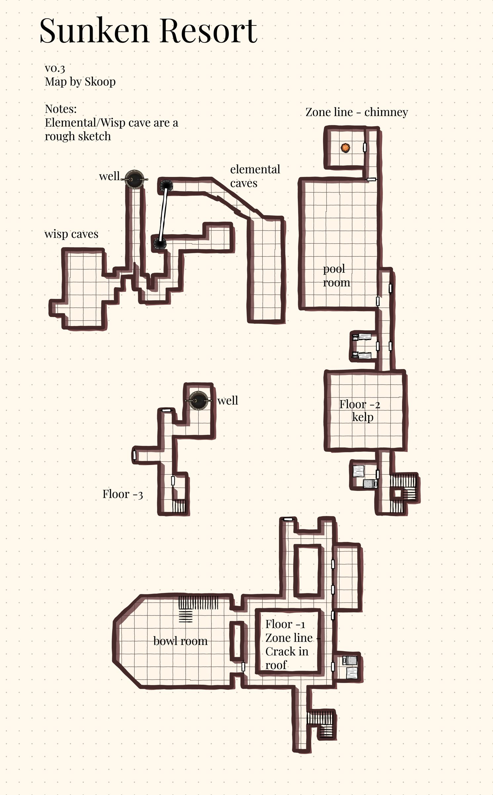

Sunken Resort
The zone line is in the sunken building in the lake near the Sojourner camp in Scarwood. ;
Map

Named mobs
| Named | Lvl | Race / class | Where | Known loot (hover) |
|---|---|---|---|---|
| Echo of the Unfinished | - | Undead | - | Ticking Locket, Ripper Gauntlets |
| Vesryn the Unmoored | - | Undead | - | |
| Waterlord Lin'Xa | - | Elemental | - | Boots of Elemental Mastery |
| An unblinking overseer | - | Undead | - | Coral-Encrusted Plate Bracer |
Mobs & NPCs (camps by level)
Rows with a level are huntable camps; rows without are usually town NPCs or not yet documented.
| Name | Lvl | Race | Class | Where | Notes |
|---|---|---|---|---|---|
| a breathless elf | 29-38 | - | Druid | - | |
| a drowned elf | 29-38 | - | Fighter | - | |
| a dutiful sommelier | 29-38 | - | - | - | |
| a faded concierge | 29-38 | - | - | - | |
| a flickering echo | 29-38 | Wisp | Melee | - | |
| a headless vacationer | 29-38 | - | Fighter | - | |
| a hungering escapee | 29-38 | - | - | - | Placeholder for Echo of the Unfinished |
| a resonating echo | 29-38 | Wisp | Shaman | - | |
| a stunned bather | 29-38 | - | Shaman | - | |
| a weeping visitor | 29-38 | - | - | - | |
| a wide-eyed reveler | 29-38 | - | - | - | |
| a subterranean elemental | - | - | - | - |
Quests
| Quest | Reward | Giver | Min lvl |
|---|---|---|---|
| Example Quest Name | Example Reward | Example Quest Giver | - |
| Example Quest Name | Example Reward | Example Quest Giver | - |
Gear that drops here
| Slot | Item | Key stats (wiki) | How to get | Lvl | Classes |
|---|---|---|---|---|---|
| Shoulders | Rusty Iron Chain Shoulderguards | AC 13 | Drop: a cultist guard (lvl 44) — Glass Flats, - Drop: a cultist lookout (lvl 43) — Glass Flats, - Drop: a Plagueborn knight (lvl ~42-44) — Fallen Pass, Western Beach Shrine, Elder Drake area Drop: a Plagueborn watchman (lvl ~52-53) — Fallen Pass, Upper Saman | 27 | BRD CLR FTR INQ PAL RNG ROG SHD SHM |
| Back | Rusty Iron Plate Cloak | AC 5 | Drop: a cultist lookout (lvl 43) — Glass Flats, - Drop: a crystallized skeleton (lvl ~35-40) — Glass Flats, - Drop: a highwayman prospect (lvl ~31+) — Glass Flats, - Drop: a tormented guardian (lvl unconfirmed) — Glass Flats | 27 | CLR FTR INQ PAL SHD |
| Neck | Rusty Iron Plate Collar | AC 4 | Drop: a headless vacationer (lvl 29-38) — Sunken Resort, - Drop: a Valtheris champion (lvl -) — Rothold, - Drop: a favored vanguard (lvl -) — Rothold, - Drop: a Valtheris devout (lvl -) — Rothold, - | 27 | CLR FTR INQ PAL SHD |
| Hands | Rusty Iron Plate Gauntlets | AC 13 | Drop: a weeping visitor (lvl 29-38) — Sunken Resort, - Drop: Tormented Soul (lvl -) — Fallen Watch, - Drop: a plague-sworn squire (lvl unconfirmed) — Fallen Watch Drop: a zombified rat (lvl 45-60) — Fallen Watch, - | 27 | CLR FTR INQ PAL SHD |
| Primary, Secondary | Rusty Iron Spear | DMG 9 / DLY 34 | Drop: a headless vacationer (lvl 29-38) — Sunken Resort, - Drop: a crystallized skeleton (lvl ~35-40) — Glass Flats, - Drop: a road deacon (lvl ~31+) — Glass Flats, - Drop: a Plagueborn knight (lvl ~42-44) — Fallen Pass, Western Beach Shrine, Elder Drake area | 27 | ARC BRD BST FTR INQ RNG ROG SHD SHM |
| Hands | Tattered Cotton Gloves | AC 4 | Drop: a poacher (lvl ~28-30) — Keeper's Bight, - Drop: a poacher bruiser (lvl 28-30) — Keeper's Bight, Poacher Camp, Bear Cave Drop: a poacher herbalist (lvl 28-30) — Keeper's Bight, Poacher Camp Named drop: Seamas Growt (lvl ~38+) — Fallen Pass, Pillars(wanders) | 27 | All classes |
| Neck | Tattered Cotton Gorget | AC 3 | Named drop: Poacher Garrus (lvl >35) — Keeper's Bight, Poacher Camp Drop: a poacher (lvl ~28-30) — Keeper's Bight, - Drop: a treant (lvl 38) — Glinting Hollow, - Drop: a cultist guard (lvl 44) — Glass Flats, - | 27 | All classes |
| Primary | Worn Ironbark Great Staff | DMG 16 / DLY 46 | Drop: a Witchguard cultor (lvl ~39+) — Shallow Shoals, Black Shoals Fortress Drop: a corrupted monk (lvl unconfirmed) — Shallow Shoals Drop: a Witchguard defiler (lvl unconfirmed) — Shallow Shoals Drop: a Benu Dhai brother (lvl unconfirmed) — Shallow Shoals | 27 | BST CLR DRU ELE ENC FTR MNK NEC PAL SHM SPB WIZ |
| Primary, Secondary | Rusty Iron Axe | DMG 11 / DLY 42 | Drop: a Witchguard defiler (lvl unconfirmed) — Shallow Shoals Drop: a Witchguard signifer (lvl ~41+) — Shallow Shoals, Black Shoals Fortress Drop: a Witchguard serverat (lvl ~39+) — Shallow Shoals, Black Shoals Fortress Drop: a Plagueborn veteran (lvl ~42-44) — Fallen Pass, Elder Drake area | 28 | BST FTR INQ PAL RNG SHD SPB |
| Primary, Secondary | Rusty Iron Mace | DMG 11 / DLY 40 | Drop: a Witchguard sacramir (lvl ~39+) — Shallow Shoals, Black Shoals Fortress Drop: a Witchguard princeps (lvl ~39+) — Shallow Shoals, Black Shoals Fortress Drop: a Witchguard myrmidon (lvl unconfirmed) — Shallow Shoals Drop: a Witchguard serverat (lvl ~39+) — Shallow Shoals, Black Shoals Fortress | 28 | BRD BST CLR DRU FTR INQ MNK PAL RNG ROG SHD SHM SPB |
| Shirt | Rusty Iron Plate Arming Doublet | no stats listed on wiki | Named drop: Poacher Tolan (lvl >35) — Keeper's Bight, Poacher Camp Drop: a poacher bruiser (lvl 28-30) — Keeper's Bight, Poacher Camp, Bear Cave Drop: a poacher (lvl ~28-30) — Keeper's Bight, - Drop: a Witchguard princeps (lvl ~39+) — Shallow Shoals, Black Shoals Fortress | 28 | CLR FTR INQ PAL SHD |
| Wrist | Rusty Iron Plate Bracer | AC 11 | Drop: a cultist lookout (lvl 43) — Glass Flats, - Drop: a cultist guard (lvl 44) — Glass Flats, - Drop: a grizzled raider (lvl ~31+) — Glass Flats, - Drop: a Plagueborn priest (lvl ~42-44) — Fallen Pass, Elder Drake area | 28 | CLR FTR INQ PAL SHD |
| Waist | Rusty Iron Plate Girdle | AC 5 | Drop: a wide-eyed reveler (lvl 29-38) — Sunken Resort, - Drop: a bloodbound defender (lvl -) — Rothold, - Drop: a Valtheris priest (lvl -) — Rothold, - Drop: a Valtheris devout (lvl -) — Rothold, - | 28 | CLR FTR INQ PAL SHD |
| Shoulders | Rusty Iron Plate Pauldrons | AC 16 | Drop: a treant (lvl 38) — Glinting Hollow, - Drop: a weeping visitor (lvl 29-38) — Sunken Resort, - Drop: a withered corpse (lvl -) — Rothold, - Drop: a discarded corpse (lvl -) — Rothold, - | 28 | CLR FTR INQ PAL SHD |
| Primary, Secondary | Rusty Iron Warhammer | DMG 8 / DLY 30 | Drop: a Witchguard signifer (lvl ~41+) — Shallow Shoals, Black Shoals Fortress Drop: a Witchguard cultor (lvl ~39+) — Shallow Shoals, Black Shoals Fortress Drop: a Witchguard sacramir (lvl ~39+) — Shallow Shoals, Black Shoals Fortress Drop: a Witchguard veles (lvl unconfirmed) — Shallow Shoals | 28 | BRD BST CLR DRU FTR INQ MNK PAL RNG ROG SHD SHM SPB |
| Feet | Tattered Cotton Boots | AC 4 | Drop: a Witchguard cultor (lvl ~39+) — Shallow Shoals, Black Shoals Fortress Drop: a Witchguard signifer (lvl ~41+) — Shallow Shoals, Black Shoals Fortress Drop: a corrupted enchantress (lvl unconfirmed) — Shallow Shoals Drop: a corrupted adept (lvl unconfirmed) — Shallow Shoals | 28 | All classes |
| Head | Tattered Cotton Cap | AC 5 | Drop: a poacher (lvl ~28-30) — Keeper's Bight, - Drop: a poacher bruiser (lvl 28-30) — Keeper's Bight, Poacher Camp, Bear Cave Drop: a cultist guard (lvl 44) — Glass Flats, - Drop: a cultist lookout (lvl 43) — Glass Flats, - | 28 | All classes |
| Back | Tattered Cotton Cape | AC 2 | Drop: a Witchguard venator (lvl unconfirmed) — Shallow Shoals Drop: a corrupted priestess (lvl unconfirmed) — Shallow Shoals Drop: a Witchguard defiler (lvl unconfirmed) — Shallow Shoals Drop: a Witchguard veles (lvl unconfirmed) — Shallow Shoals | 28 | All classes |
| Shoulders | Tattered Cotton Mantle | AC 6 | Drop: a Witchguard cultor (lvl ~39+) — Shallow Shoals, Black Shoals Fortress Drop: a corrupted adept (lvl unconfirmed) — Shallow Shoals Drop: a Witchguard veles (lvl unconfirmed) — Shallow Shoals Drop: a Witchguard myrmidon (lvl unconfirmed) — Shallow Shoals | 28 | All classes |
| Neck | Tattered Leather Gorget | AC 4 | Drop: a pale jailer (lvl 40) — Night Harbor, Pale Guard Tower Drop: a Claw henchman (lvl ~35) — Night Harbor, Claw Compound Drop: a sand giant raider (lvl ~45) — Vale of Zintar, Fishing Camp Drop: a Dustrend legionary (lvl ~29-30) — Vale of Zintar, - | 28 | ARC BRD BST CLR DRU FTR INQ MNK PAL RNG ROG SHD SHM SPB |
| Chest | Tattered Leather Tunic | AC 11 | Drop: a Plagueborn veteran (lvl ~42-44) — Fallen Pass, Elder Drake area Named drop: Kallen Oison (lvl 37) — Fallen Pass Drop: a Plagueborn citizen (lvl ~36-37) — Fallen Pass, Undead Citizens Drop: a smuggler (lvl unconfirmed) — Fallen Pass | 28 | ARC BRD BST CLR DRU FTR INQ MNK PAL RNG ROG SHD SHM SPB |
| Feet | Boots of Elemental Mastery | AC 24, AGI +2, DEX +3, INT +3, HP +5 | Named drop: Waterlord Lin'Xa (lvl -) — Sunken Resort, - | any / ? | CLR FTR INQ PAL SHD |
| Wrist | Coral-Encrusted Plate Bracer | AC 21, STR +1, DEX +4, HP +15 | Named drop: an unblinking overseer (lvl -) — Sunken Resort, - | any / ? | CLR FTR INQ PAL SHD |
| Neck | Ticking Locket | INT +4, CHA +5, Mana +20 | Named drop: Echo of the Unfinished (lvl -) — Sunken Resort, - | any / ? | All classes |
| Primary, Secondary | Trident of Lin'Xa | DMG 13 / DLY 26, STR +5, STA +4 | Named drop: Waterlord Lin'Xa (lvl -) — Sunken Resort, - | any / ? | ARC BRD BST FTR INQ RNG ROG SHD SHM |